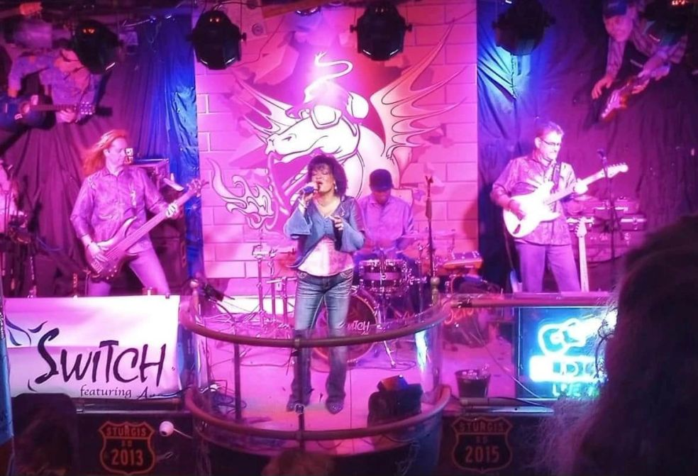

Band Bio
Meet SWITCH featuring Ana.

SWITCH featuring Ana is Brevard’s premier dance party band, bringing live music to stages and dance floors across Florida’s Space Coast.
The band features Ana Aguiar, Gary Kirby, Paul Beach, and Sammy Hill. Together, they bring the energy of a live band to every SWITCH night.
Find a showThe band.

Gary Kirby

Paul Beach

Sammy Hill
Ana Aguiar – Award Winning Vocalist
Having returned to Brevard County in March of 1997 from South Florida, where she performed regularly in hotels, restaurants and night clubs, Ana has created a name for herself in the local entertainment scene. The variety of the styles of her shows are as versatile as the music she sings. "...this is a woman oozing with talent, a voice that is clear, strong and kind enough to evoke memories..."(The Pub Crawler, Florida Today TGIF, week of February 18, 2000)
In 2002, Ana competed in and won the first level of the Colgate Country Showdown in Hartford, Wisconsin. This is a national talent search sponsored by Colgate-Palmolive. Three weeks later, she won the state championship.
In 2004, Ana recorded the first track in the tribute album "Flying High - Kitty Hawk Through MIG Alley", A Roundup of Air Force Musical Memories from 1903 - 1953, which is contracted to play at the Smithsonian Institute of Air and Space through 2050.
In 2012, Ana was asked to lend her vocals to Soul singer Billy Lee’s debut album “Beside Myself”. She not only sang background vocals but was featured on a duet with The Soul Man, song titled “The Rest of Our Lives”. The songs on the album became best sellers on iTunes and International Internet Radio.
Ana was awarded "Favorite Vocalist" by Brevard Live Magazine and its readers at the Brevard Music Awards in 2007, 2008 & 2009.
Using her skill and knowledge of music and entertainment organization, she has coordinated hundreds private parties, weddings and corporate events.
Ana presently sings with her four-piece dance band, Switch Ft. Ana in local venues covering many popular genre of music including top 40, country & rock, jazz standards, just to name a few. She also performs as a soloist and duos at fine restaurants and private clubs singing a variety of standards and popular songs from yesterday and today.
Her talents have afforded here to travel and perform all around the United States and abroad.
Gary Kirby – Guitar, Keys, Vocals
Having received a degree in Music Composition from the University of Cincinnati, Gary Kirby honed his talent and skills by taking the show on the road. For 10 years, he was represented by the Shorman Agency in Orlando, Florida. He has traveled across The United States and has performed for our troops around the world. Gary performed at The Grand Ole Opry and at the age of 15, he was signed to a record deal with Universal Records in Nashville. This singer/song writer also plays all stringed instruments, piano and keyboards and drums. Gary has written songs for children’s television and scored many national and local programs for PBS. His collaboration in children’s music led to a Grammy Nomination. Gary has released two original Cd’s titled ‘My Life In Music”. He currently operates a recording studio producing music.
Paul “The Beach” Beach
The Beach has been sharing his passion for music with audiences for 35 years, performing solo and with his high-energy band, SWITCH. Known for their Top-40 and dance music sets, SWITCH features a lineup of consummate professionals and all around awesome people, with The Beach primarily on bass—though he’s been known to “switch” things up with the occasional sax solo.
A multi-instrumentalist and vocalist inspired by artists like Sting, Peter Gabriel, Elton John, James Taylor, and Billy Joel, The Beach blends smooth jazz, yacht rock, and decades of stage experience to create engaging, dynamic performances. Whether it’s a solo gig or a packed dance floor, his goal is simple: play great music, make real connections, and keep the energy high.
Sam “Sammy” Hill
Combining John Bonham’s powerhouse rock chops with Michael Jordan’s chiseled good looks, award-winning drummer Sammy Hill is a shining star on Florida’s Space Coast music scene.
Taught by his father, a professional musician, the Leesburg, Florida native began playing drums at the age of four. By his teens, Sammy was leading his high school marching band to victories at numerous state competitions.
Following his migration from Tampa to Brevard County in 2006, Sammy immediately plunged head-first into the local music scene – quickly establishing his name and reputation at various Jam Nights throughout the area. Today, he is most familiar to fans in his role as the drummer for the wildly popular, high-energy rock bands, The Day After and Bullet Theory, as well as Space Coast's legendary dance phenom, Switch Featuring Ana.
Frequently compared stylistically to Blink 182’s Travis Barker, Sam is well-known for his hard-hitting style and has become a favorite among fans and fellow musicians alike.
“I just love playing music,” he humbly confessed in an interview shortly after being named “Favorite Drummer” at the 2009 and 2010 Brevard Live Music Awards ceremony, held annually in Melbourne, Florida, where he also acted as the 'house drummer' for the BMA band for several years.
Currently, Sam devotes the majority of his time to Switch Featuring Ana, but can be found a few times a year getting rowdy with The Day After or local reggae talents, Top Hill Crew.